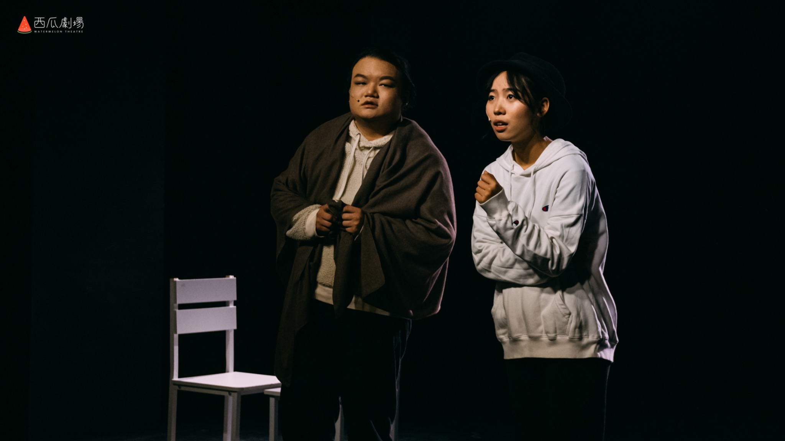
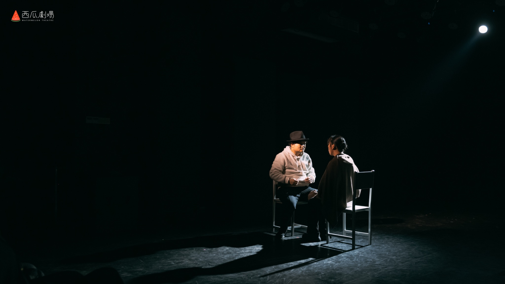
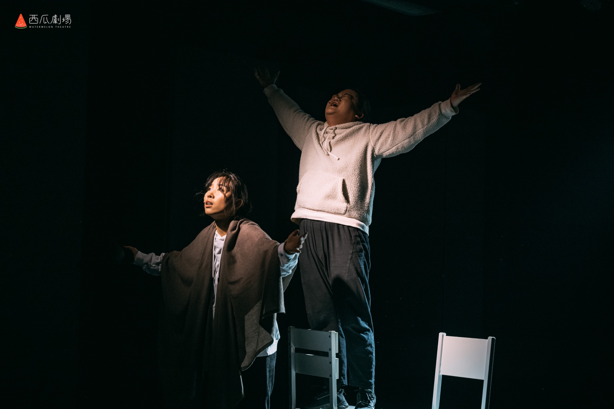

无场次话剧 · 2021
海边有一栋倾斜的房子
EXPRESSERS
“过去一片寂静，未来无限光明。”
简介
一对为自己赋予“演员”和“夫妻”身份的男女，在结婚三十周年纪念日的夜晚，因为一只梦里的水怪重新翻开生活。角色与演员、现实与表演反复交换位置。
剧本试读 ↗
记录
2022年第一届中国淄博戏剧节首演
第一届中国淄博戏剧节小剧场展演单元优秀编剧奖
广州西瓜剧场2022年戏剧大赛决赛竞演单元
2022年第六届南宁市“新青年”戏剧节特邀展演剧目
2023“戏剧中国”年度作品话剧类潜力剧本奖
2024年第六届大凉山国际戏剧节参演剧目
STILLS / 04
剧照
←
→
01 / 04

02 / 04

03 / 04

04 / 04
横向滑动 · 点击放大